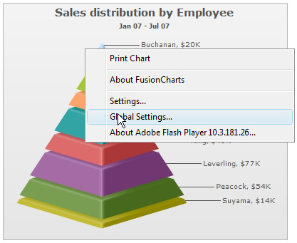

Installation of FusionWidgets XT merely involves copying and pasting the SWF and JavaScript files from the package into any of your folders.
Installation of FusionWidgets for your web application is just a two-step affair:
- Create a folder named FusionWidgets in the root of your application (though, it's not mandatory to name the folder as FusionWidgets or create it under the root folder. However, it organizes things a lot more, as all the pages within your website can now access the common set of charts).
- Copy all the SWF and JavaScript files from Download Package > Charts folder and paste it in FusionWidgets folder.
Installation Complete, there's no more steps involved. FusionWidgets is now ready to use in your web application.
If you want to create charts on your local machine, follow the steps below:
- Create a folder named FusionWidgets inside your working folder. Again note that, it's not mandatory to name the folder as FusionWidgets or create it as a new folder. However, doing this way organizes things a lot more.
- Copy all the SWF and JavaScript files from Download Package > Charts folder and now paste it in FusionWidgets folder.
- To enable communication between Flash charts and JavaScript (like updating data, retrieving data, printing, exporting, event handling etc.) in your local machine, you need to setup Flash Player Global Security settings.
If the version of your Flash Player is 10.3 or above you need to right click on the chart and select Global Settings... option from the right-click menu and do the following:
- Select Advanced tab
- Click Add to Trusted Zone button
- Add all the folder which contain the chart SWF files to this zone

To get a detailed step-by-step tutorial on the above, please click here.
If the version of your Flash Player is lower than 10.3, it can be done in five simple steps:
- Go online to Adobe Flash Player Settings Manager and choose the Global Security Settings panel
- Select the Always allow radio button on the top to allow security exceptions. This control is marked as "1" in the image below
- From the Edit Locations... drop down box, select Add location... option to bring up a dialog box. The drop down box is marked as "2" in the image below
- Now select Browse for folder... and browse to the location where you are keeping the chart SWF files
- After confirming your selection you should see the path of the exception added in area "3" of the image below

In case you wish to do this settings offline, you can ease this process by running a script file from the folder where you have kept the chart SWF files. Go to How to setup Flash Player Global Security Settings? page.
That completes the installation for FusionWidgets. Now, all you need to do is build your XML or JSON data and HTML page, which we'll see in Creating your first chart section.